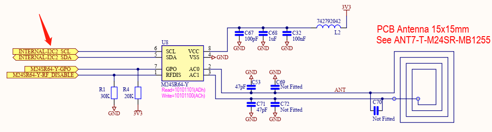
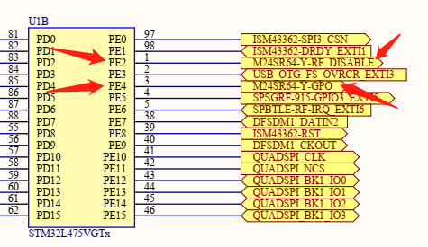
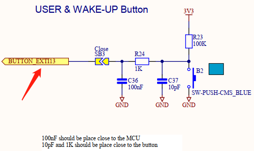
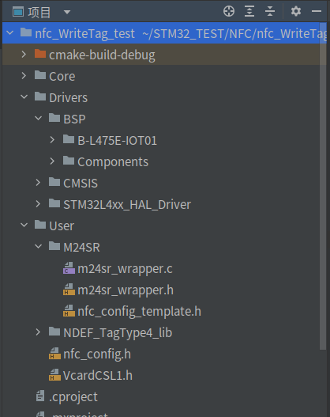
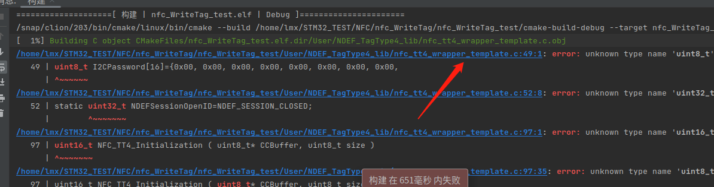

NFC 写卡实验#
NFC是一种短距离的高频无线通信技术，允许电子设备之间进行非接触式点对点数据传输，详细说明还是自己参考维基百科吧Near-field communication(NFC)
实验目的#
NFC 向手机写 AAR NDEF 信息
NFC 向手机写 NDEF 信息
准备工作#
有 NFC 功能的手机
手机安装 ST BLE Profile 软件
:exclamation: 注意
手机要开启 NFC，若最终的实验现象跟文档演示的不符，例如扫 NFC 后出现某个软件，则需要把该软件的 NFC 功能关闭，例如扫了之后出现京东 APP，则需把京东 APP 的 NFC 权限关闭。
硬件#
物联网实验箱
USB 数据线
mobile phone
软件#
CLion
STM32CubeMX
ST BLE Profile.apk
相关电路原理#
STM32 与 NFC 的硬件连接


STM32 与 USER 按键硬件连接

引脚定义与相关API#
引脚定义
PE2 配置为 GPIO_Output， PE4 配置为 GPIO_Output，PB10 配置为 SCL引脚，PB11 配置为 SDA引脚
相关API
/**
* @brief This fonction write NDEF file from data given in the URI structure
* @param pURI : pointer on URI structure to prepare NDEF
* @retval SUCCESS : NDEF URI stored
* @retval ERROR : Not able to store NDEF URI
*/
uint16_t TT4_WriteURI(sURI_Info *pURI)
/**
* @brief This fonction write NDEF file from data given in the SMS structure
* @param pSMS : pointer on SMS structure to prepare NDEF
* @retval SUCCESS : NDEF SMS stored
* @retval ERROR : Not able to store NDEF SMS
*/
uint16_t TT4_WriteSMS(sSMSInfo *pSMS)
/**
* @brief This fonction write NDEF file from data given in the eMail structure
* @param pEmailStruct : pointer on eMail structure to prepare NDEF
* @retval SUCCESS : NDEF eMail stored
* @retval ERROR : Not able to store NDEF eMail
*/
uint16_t TT4_WriteEmail(sEmailInfo *pEmailStruct)
/**
* @brief This fonction add AAR (Android Application Record) in the tag
* @param pAAR : pointer on structure that contain AAR information
* @retval SUCCESS : AAR added
* @retval ERROR : Not able to add AAR
*/
uint16_t TT4_AddAAR(sAARInfo *pAAR)
实验步骤#
写NDEF信息#
STM32CubeMX创建工程#
以开发板为模板生成工程，保持默认设置，不修改任何引脚配置和时钟配置
代码编写及运行结果#
添加需要的 .c 和 .h 文件
新建 User 文件夹，
将 /home/lmx/STM32Cube/Repository/STM32Cube_FW_L4_V1.17.2/Projects/B-L475E-IOT01A/Applications/NFC/Common 路径下的
M24SR 和 NDEF_TagType4_lib 文件夹和
/home/lmx/STM32Cube/Repository/STM32Cube_FW_L4_V1.17.2/Projects/B-L475E-IOT01A/Applications/NFC/WriteTag/Inc 路径下的
nfc_config.h和 VcardCSL1.h 文件添加到新建的 User 文件夹下。
再将 BSP 文件夹添加到工程文件夹的 ~/Drivers 目录下（这么长的路径都看晕了是吧:dizzy_face::dizzy_face:，熟悉命令行操作的同学话建议直接命令行解决）
顺便复习一下 Linux 的 cp 命令 ，cp 命令的基本格式如下：
[root@localhost ~]# cp [选项] 源文件 目标文件选项：
-a：相当于 -d、-p、-r 选项的集合，这几个选项我们一一介绍；
-d：如果源文件为软链接（对硬链接无效），则复制出的目标文件也为软链接；
-i：询问，如果目标文件已经存在，则会询问是否覆盖；
-l：把目标文件建立为源文件的硬链接文件，而不是复制源文件；
-s：把目标文件建立为源文件的软链接文件，而不是复制源文件；
-p：复制后目标文件保留源文件的属性（包括所有者、所属组、权限和时间）；
-r：递归复制，用于复制目录；
-u：若目标文件比源文件有差异，则使用该选项可以更新目标文件，此选项可用于对文件的升级和备用。
觉得太长的话，只需要记住常用的 -r，-a 选项就足够了，更详细的用法请自行了解。
完成后是这样子的。

修改 ~/Core/Src/stm32l4xx_it.c 文件
包含头文件
/* USER CODE BEGIN Includes */
#include "stm32l475e_iot01.h"
/* USER CODE END Includes */
添加中断服务程序
若 EXTI15_10_IRQHandler 报错，把 stm32l4xx_it.c 文件原来的 EXTI15_10_IRQHandler 函数整段删除
/* USER CODE BEGIN 1 */
void EXTI4_IRQHandler(void)
{
HAL_GPIO_EXTI_IRQHandler(NFC_GPIO_GPO_PIN);
}
void EXTI15_10_IRQHandler(void)
{
HAL_GPIO_EXTI_IRQHandler(USER_BUTTON_PIN);
}
/* USER CODE END 1 */
修改 ~/Core/Inc/stm32l4xx_it.h 文件
/* USER CODE BEGIN EFP */
void EXTI15_10_IRQHandler(void);
void EXTI4_IRQHandler(void); /* NFC Gpo pin */
/* USER CODE END EFP */
修改 main.c 文件
添加需要的头文件
/* Private includes ----------------------------------------------------------*/
/* USER CODE BEGIN Includes */
#include "string.h"
#include "stdio.h"
#include "stdbool.h"
#include "stm32l475e_iot01.h"
#include "lib_TT4_interface.h"
#include "m24sr.h"
#include "VcardCSL1.h"
/* USER CODE END Includes */
添加所需变量和函数声明
/* Private typedef -----------------------------------------------------------*/
/* USER CODE BEGIN PTD */
typedef struct
{
void (*DemoFunc)(void);
uint8_t DemoName[20];
uint32_t DemoIndex;
}BSP_DemoTypedef;
/* USER CODE END PTD */
/* Private define ------------------------------------------------------------*/
/* USER CODE BEGIN PD */
#define COUNT_OF_EXAMPLE(x) (sizeof(x)/sizeof(BSP_DemoTypedef))
/* USER CODE END PD */
/* Private macro -------------------------------------------------------------*/
/* USER CODE BEGIN PM */
static void AARwrite_demo(void);
static void URIwrite_demo(void);
static void Vcardwrite_demo(void);
static void Vcardwrite_demo2(void);
static void SMSwrite_demo(void);
static void EMAILwrite_demo(void);
static void Toggle_Led2(uint32_t freq);
static void SystemClock_Config(void);
/* USER CODE END PM */
/* Private variables ---------------------------------------------------------*/
/* USER CODE BEGIN PV */
uint8_t UserPressButton = 0;
uint8_t DemoIndex = 0;
BSP_DemoTypedef NFC_examples[]={
{URIwrite_demo, "URI", 0},
{SMSwrite_demo, "SMS", 1},
{EMAILwrite_demo, "EMAIL", 2},
{Vcardwrite_demo, "vCARD", 3},
{Vcardwrite_demo2, "vCARD2", 4},
//{AARwrite_demo, "AAR", 5},
};
/* Field to fill for the SMS demonstration */
char PhoneNumber[] = {"+33612345678\0"};
char Message[] = {"This SMS was generated automatically by tapping your phone near BM1297\0"};
char Instruction[] = {"This is an example of NFC generated SMS using BM1297 board\0"};
/* Field to fill for the Vcard demonstration */
char FirstName[] = {"Help Desk\0"};
char Title[] = {"Customer support\0"};
char Org[] = {"STMicroelectronics\0"};
char HomeAddress[] = {"\0"};
char WorkAddress[] = {"190 avenue Celestin Coq 13106 ROUSSET FRANCE\0"};
char HomeTel[] = {"\0"};
char WorkTel[] = {"\0"};
char CellTel[] = {"+33 6 11 22 33 44\0"};
char HomeEmail[] = {"\0"};
char WorkEmail[] = {"customer.service@st.com \0"};
/* Field to fill for the Email demonstration */
char EmailAdd[] = {"customer.service@st.com\0"};
char Subject[] = {"M24SR S/N 754FHFGJF46G329 WARRANTY\0"};
char EmailMessage[] = {"this is a demonstration to illustrate an automatic warranty activation email\0"};
char Information[] = {"automatic warranty\0"};
/* USER CODE END PV */
/* Private function prototypes -----------------------------------------------*/
void SystemClock_Config(void);
/* USER CODE BEGIN PFP */
static void AARwrite_demo(void);
/* USER CODE END PFP */
修改 mian() 函数
int main(void)
{
/* USER CODE BEGIN 1 */
GPIO_InitTypeDef gpioinitstruct = {0};
/* USER CODE END 1 */
/* MCU Configuration--------------------------------------------------------*/
/* Reset of all peripherals, Initializes the Flash interface and the Systick. */
HAL_Init();
/* USER CODE BEGIN Init */
/* USER CODE END Init */
/* Configure the system clock */
SystemClock_Config();
/* USER CODE BEGIN SysInit */
/* USER CODE END SysInit */
/* Initialize all configured peripherals */
/*
MX_GPIO_Init();
MX_DFSDM1_Init();
MX_I2C2_Init();
MX_QUADSPI_Init();
MX_SPI3_Init();
MX_USART1_UART_Init();
MX_USART3_UART_Init();
MX_USB_OTG_FS_PCD_Init();*/
/* USER CODE BEGIN 2 */
BSP_LED_Init(LED2);
__HAL_RCC_GPIOA_CLK_ENABLE();
gpioinitstruct.Pin = GPIO_PIN_5;
gpioinitstruct.Mode = GPIO_MODE_OUTPUT_PP;
gpioinitstruct.Pull = GPIO_NOPULL;
gpioinitstruct.Speed = GPIO_SPEED_FREQ_HIGH;
HAL_GPIO_Init(GPIOA, &gpioinitstruct);
BSP_PB_Init(BUTTON_USER, BUTTON_MODE_EXTI);
while (TT4_Init() != SUCCESS);
BSP_LED_On(LED2);
/* USER CODE END 2 */
/* Infinite loop */
/* USER CODE BEGIN WHILE */
while (1)
{
/* USER CODE END WHILE */
/* USER CODE BEGIN 3 */
UserPressButton = 0;
NFC_examples[DemoIndex++].DemoFunc();
/* Toggle LEDs (different speed between each Test) */
while (!UserPressButton) Toggle_Led2(80*(DemoIndex+1));
/* If all Demo has been already executed, Reset DemoIndex to restart BSP example*/
if(DemoIndex >= COUNT_OF_EXAMPLE(NFC_examples))
{
DemoIndex = 0;
}
}
/* USER CODE END 3 */
}
在 mian.c 文件下面添加所需的函数定义
/* USER CODE BEGIN 4 */
static void URIwrite_demo(void)
{
sURI_Info URI;
/* Prepare URI NDEF message content */
strcpy(URI.protocol,URI_ID_0x01_STRING);
strcpy(URI.URI_Message,"st.com");
strcpy(URI.Information,"\0");
/* First write NDEF */
while (TT4_WriteURI(&URI) != SUCCESS);
}
static void SMSwrite_demo(void)
{
uint16_t status = ERROR;
sSMSInfo SMSStruct;
sSMSInfo *pSMSStruct;
pSMSStruct = &SMSStruct;
memcpy(pSMSStruct->PhoneNumber, PhoneNumber, strlen(PhoneNumber)+1);
memcpy(pSMSStruct->Message, Message, strlen(Message)+1);
memcpy(pSMSStruct->Information, Instruction, strlen(Instruction)+1);
status = TT4_WriteSMS ( pSMSStruct );
if(status != SUCCESS)
{
Error_Handler();
}
}
static void EMAILwrite_demo(void)
{
uint16_t status = ERROR;
sEmailInfo EmailStruct;
sEmailInfo *pEmailStruct;
pEmailStruct = &EmailStruct;
memcpy(pEmailStruct->EmailAdd, EmailAdd, strlen(EmailAdd)+1);
memcpy(pEmailStruct->Subject, Subject, strlen(Subject)+1);
memcpy(pEmailStruct->Message, EmailMessage, strlen(EmailMessage)+1);
memcpy(pEmailStruct->Information, Information, strlen(Information)+1);
status = TT4_WriteEmail ( pEmailStruct );
if(status != SUCCESS)
{
Error_Handler();
}
}
static void Vcardwrite_demo(void)
{
uint16_t status = ERROR;
/* USee a NDEF file Vcard with a default Jpeg embedded */
status = TT4_WriteNDEF((uint8_t*)uVcardCSL1);
if(status != SUCCESS)
{
Error_Handler();
}
}
static void Vcardwrite_demo2(void)
{
uint16_t status = ERROR;
sVcardInfo VcardStruct;
sVcardInfo *pVcardStruct;
pVcardStruct = &VcardStruct;
memcpy(pVcardStruct->FirstName, FirstName, strlen(FirstName)+1);
memcpy(pVcardStruct->Title, Title, strlen(Title)+1);
memcpy(pVcardStruct->Org, Org, strlen(Org)+1);
memcpy(pVcardStruct->HomeAddress, HomeAddress, strlen(HomeAddress)+1);
memcpy(pVcardStruct->WorkAddress, WorkAddress, strlen(WorkAddress)+1);
memcpy(pVcardStruct->HomeTel, HomeTel, strlen(HomeTel)+1);
memcpy(pVcardStruct->WorkTel, WorkTel, strlen(WorkTel)+1);
memcpy(pVcardStruct->CellTel, CellTel, strlen(CellTel)+1);
memcpy(pVcardStruct->HomeEmail, HomeEmail, strlen(HomeEmail)+1);
memcpy(pVcardStruct->WorkEmail, WorkEmail, strlen(WorkEmail)+1);
status = TT4_WriteVcard ( &VcardStruct );
if(status != SUCCESS)
{
Error_Handler();
}
}
static void AARwrite_demo(void)
{
uint16_t status = ERROR;
uint8_t NULL_NDEF[2] = {0,0};
sAARInfo AAR_struct;
sAARInfo *pAAR;
pAAR = &AAR_struct;
/* to set only AAR force NDEF size to 0 before */
TT4_WriteNDEF(NULL_NDEF);
memcpy(pAAR->PakageName, "com.stm.bluetoothlevalidation", strlen("com.stm.bluetoothlevalidation")+1);
/* Add AAR record */
status = TT4_AddAAR(pAAR);
if(status != SUCCESS)
{
Error_Handler();
}
}
/**
* @brief Toggle LEDs
* @param None
* @retval None
*/
static void Toggle_Led2(uint32_t freq)
{
BSP_LED_Toggle(LED2);
HAL_Delay(freq);
}
/* Public functions ---------------------------------------------------------*/
/**
* @brief EXTI line detection callback.
* @param GPIO_Pin: Specifies the pins connected EXTI line
* @retval None
*/
void HAL_GPIO_EXTI_Callback(uint16_t GPIO_Pin)
{
if(GPIO_Pin == NFC_GPIO_GPO_PIN)
{
M24SR_GPO_Callback();
}
if (USER_BUTTON_PIN == GPIO_Pin)
{
while (BSP_PB_GetState(BUTTON_USER) == RESET);
UserPressButton = 1;
}
}
/* USER CODE END 4 */
修改 CMakeLists.txt 文件
在56行中添加 “User/.”
file(GLOB_RECURSE SOURCES "Core/*.*" "Drivers/*.*" "User/*.*")
在最下方添加以下代码
include_directories(
Drivers/BSP/B-L475E-IOT01
Drivers/BSP/Components/Common
Drivers/BSP/Components/m24sr
User
User/M24SR
User/NDEF_TagType4_lib
// 其他include目录
// 需要哪个外设就包含进去，例如用于相对湿度和温度测量的电容式数字传感器：Drivers/BSP/Components/hts221
)
file(GLOB_RECURSE SOURCES
"Drivers/BSP/B-L475E-IOT01/*.*"
"Drivers/BSP/Components/Common/*.*"
"Drivers/BSP/Components/m24sr/*.*"
"User/M24SR/*.*"
"User/NDEF_TagType4_lib/*.*"
// *.*表示通配符，也就是这个文件夹里的所有文件都会被编译
// 需要哪个外设就包含进去，例如用于相对湿度和温度测量的电容式数字传感器："Drivers/BSP/Components/hts221/*.*"
)
编译并运行后，定位到有错误的文件，具体为 nfc_tt4_wrapper_template.h 和 nfc_tt4_wrapper_template.c 文件，将两文件的内容全部删除


再次编译运行，这时候可以看到开发板上的 LD2 绿灯闪烁。手机开启 NFC，靠近开发板，第一次可以看到手机自动跳转到 ST 官网。每次按下开发板上的 USER 按键切换后，会写入不同的信息，有以下三种，手机都会有不同的情况。
This example writes a different message each time the USER BUTTON is pressed:
URI: the “www.st.com” website is opened by the browser
SMS: an SMS is prepeaed on the smartphone and ready to be sent to +33612345678
EMAIL: an email is prepeaed on the smartphone and ready to be sent to customer.service@st.com

写AAR NDEF信息#
看到这里同学们就会有疑问了，这个 NDEF 和 AAR NDEF 有什么区别呢:confused:？其实 AAR NDEF 只是一种特殊的 NDEF，详细说明请自行了解。
:link:AAR NDEF介绍
代码编写及运行结果#
可以直接在 写NDEF信息 的基础上进行代码修改，将 NFC_examples[] 修改为以下形式
BSP_DemoTypedef NFC_examples[]={
//{URIwrite_demo, "URI", 0},
//{SMSwrite_demo, "SMS", 1},
//{EMAILwrite_demo, "EMAIL", 2},
//{Vcardwrite_demo, "vCARD", 3},
//{Vcardwrite_demo2, "vCARD2", 4},
{AARwrite_demo, "AAR", 0},
};
手机自动打开 ST BLE Profile 软件（要提前安装在手机上，如果手机没有，会跳转到谷歌商城下载，考虑到网络原因，请提前用提供的 apk 安装）